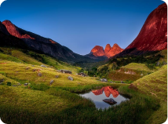

Saiba quais são os países da América do Sul reabertos para brasileiros
Infelizmente a pandemia não acabou, mas algumas cidades no país já
retomaram suas atividades turísticas, o que ocorre também em alguns
dos países vizinhos sobretudo para seus próprios cidadãos; mas como
está a situação para viajantes brasileiros?
Saiba mais...
Seguro Viagem Bolívia: como contratar e outras dicas importantes
De Amazônia, ao maior deserto de sal do mundo, passando por paisagens surreais, além de ricas cultura e história, a Bolívia
Saiba mais...
Seguro viagem Equador: como contratar e outras dicas importantes
Com o avanço (ainda que menos rápido do todos gostaríamos) da vacinação alguns brasileiros já voltam ...
Saiba mais...
Chalés em Gramado: 7 sugestões para você curtir o melhor da Serra Gaúcha

10 lugares para viajar no Rio de Janeiro
Saiba mais...
Seguro Viagem México: saiba como contratar o seu e viajar ao país
O México é um dos poucos países que estão abertos sem grandes restrições para viajantes de todo o mundo, incluindo brasileiros...